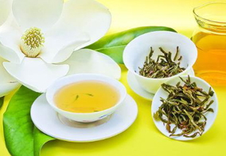
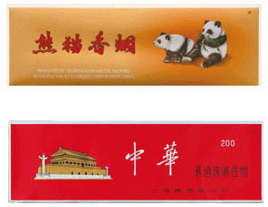
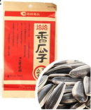

中国のおすすめお土産
中国旅行で一番頭を悩ませるのは、近所や友人、同僚などに渡すお土産でしょう。欧米諸国ではチョコレートやクッキーなどが定番ですが、食の安全問題等で数々お騒がせしている国の分、食品などは嫌がられる可能性もあります。
軽くて無難なのはお茶ですね。
食品は無難なものを選ぼう
食の問題が頻繁に起きている中国で、食品のおみやげはあまり喜ばれるものではありません。ニコニコ受け取ったものの「これ、食べても大丈夫？」と疑われること間違いないでしょう。
中国のチョコレートは日本のようにカカオが多くありません、日本人はややビターなチョコレートを好みますが、中国のチョコレートはとにかく甘ったるいものが多いです。チョコレートは味見でもできない限り安易に選ぶのはやめましょう。
空港に売っているクッキーやキャンディーなどが無難かと思います。変な店では買わないようにしましょう。
中国茶は女性を中心に喜ばれます
中国のお土産として人気が高いのが中国茶です。中国ではウーロン茶が主流と思っている方も多いと思いますが、普通に飲んでいるのは日本と同じく緑茶が多いです。
それでも場所によっては鉄観音やプーアル茶なども飲まれています。
プーアル茶などのマニアックなお茶は、入れ方や道具も必要になるため、せっかくお土産に渡しても結局そのままにされることも多いのでおすすめできません。
さて、日本人向けのお茶のお土産とあれば、花茶と呼ばれるお茶が人気です。「茉莉花茶」（ジャスミン茶）や「桂花茶」（キンモクセイ茶）などがいいですね。
フルーティーな香りと味わいが人気のため、主婦や女性層には人気があるお土産、あからさまな食品に比べれば、抵抗なく受け取ってくれるでしょう。

愛喫者にはタバコもおすすめ
中国人へお土産としてはタバコが喜ばれますが、日本人でもタバコを吸う方には中国の高級たばこを渡してもいいかもしれません。空港の免税店では安く買えますし、箱入りで買ってバラしてから配るのもいいでしょう。
人気なのは赤いパッケージの「中華」と黄色いパッケージの「熊猫（Panda）」です。

その地域の特産品を買おう
上海・蘇州などの江蘇省・四川や広東などのシルクロード沿いでは、シルク製品が有名です。服となるとつらいですが、ハンカチやスカーフなどは喜ばれます。またこの辺りでは刺繍製品の有名です。
紹興酒や白酒など、中国独特のお酒も有名ですね。重くて大変ですが、酒好きの方へのお土産にどうでしょう。
ひまわりの種などのお菓子
ひまわりの種ってハムスターやインコが食べるものでは？と思いがちですが、中国では殻付きのひまわりの種が食用で売られています。空港とかではなく、地元のスーパーや食料品売り場では必ずといっていいほど置いています。ネタとして買ってもいいのではないでしょうか。
漢方は自分で使う以外お土産にするのは避けよう
中国では漢方薬も人気がありますが、お土産として他人に渡すと、「効果がなかった」とか「変な副作用が出た」などトラブルに発展するケースもあります。元々副作用が少ない漢方ですが、お土産として渡すのは控えた方がよいでしょう。
中国旅行注意に戻す